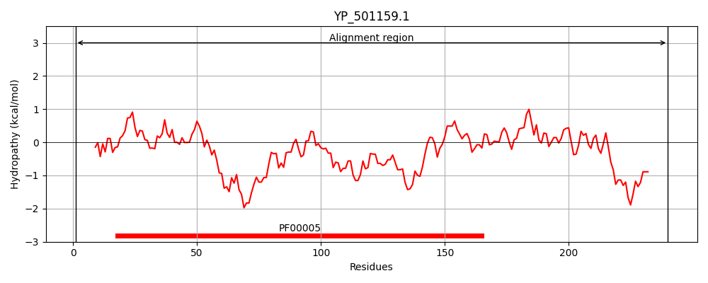
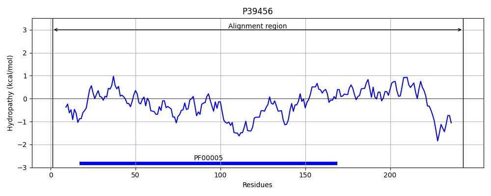
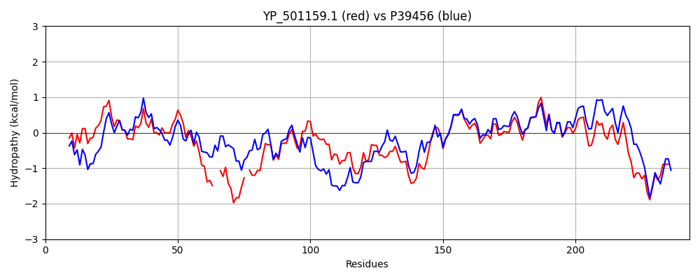

Hit Accession: P39456
Hit TCID: 3.A.1.3.14
Hit Description: gnl|BL_ORD_ID|10268 gnl|TC-DB|P39456|3.A.1.3.14 Probable amino-acid ABC transporter ATP-binding protein yckI - Bacillus subtilis.
Mach Len: 243
e:0.000000
Query TMS Count : 0
Hit TMS Count: 0
TMS-Overlap Score: 0.000000
Predicted Substrates:CHEBI:4052;cystine
BLAST Alignment:
Score: 703 , Bit scores: 275 bits, E-value: 7.0e-94, Alignment length: 243, Percentage identity: 57
Query: 1 MIQLNNIHKSFNDVEVIKGIDLSVEQGEVVTLIGRSGSGKTTLLRMINALEIPTEGTVYVNGKT--YTSKDKKSQI-EVRKQSGMVFQSYNLFPHKTALENVMEGLITVKKLKKDEARGKSLELLEKVGLTHVKDQRPHALSGGQQQRVAIARALAMNPKVMLFDEPTSALDPELVNDVLKVIKDLANEGMTMVIVTHEMRFAKEVSNNIVFIHEGMIGEQGAPEEMFNRPKTEELRRFLNVI 240
M+ + ++KSF + E++K ID+ +E+G+V+ ++G SGSGKTTLLR +NALEIP G + + + ++ K K++ I ++R++SGMVFQ+Y+LFPH+TALENVMEG + V+K K+E R ++++LL+KVGL D P LSGGQQQRV IARALA+ P++MLFDEPTSALDPELV +VLKVIKDLANEG TMV+VTHE++FA+EV++ ++FI G+I EQG PE++F+ PK E +RFLN I
Sbjct: 1 MLTVKGLNKSFGENEILKKIDMKIEKGKVIAILGPSGSGKTTLLRCLNALEIPNRGELAFDDFSIDFSKKVKQADILKLRRKSGMVFQAYHLFPHRTALENVMEGPVQVQKRNKEEVRKEAIQLLDKVGLKDKMDLYPFQLSGGQQQRVGIARALAIQPELMLFDEPTSALDPELVGEVLKVIKDLANEGWTMVVVTHEIKFAQEVADEVIFIDGGVIVEQGPPEQIFSAPKEERTQRFLNRI 243 | Protein Hydropathy Plots: |
|---|
|  |  |
Pairwise Alignment-Hydropathy Plot:
|
|---|
|  |